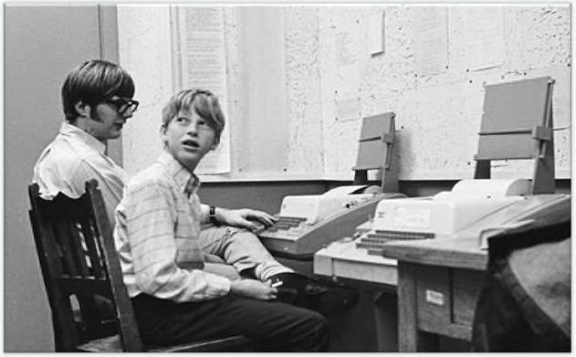

Tương tự với các quỹ chỉ số, có tuổi đời dưới 50 năm. Và các quỹ đầu cơ, đã không thành công cho đến 25 năm qua. Ngay cả việc sứ dụng rộng rãi các khoản nợ tiêu dùng - thế chấp, thẻ tín dụng và cho vay mua ô tô - đã không thành công cho đến sau Thế chiến lI, khi Dự luật Gl giúp hàng triệu người Mỹ vay dễ dàng hơn. Chó đã được thuần hóa cách đây 10.000 năm và vẫn còn giữ một số hành vi của tổ tiên hoang dã. Còn chúng ta hiện giờ, với từ20 đến 50 năm kinh nghiệm trong hệ thống tài chính hiện đại, hy vọng sẽ thích nghĩ được. Đối với một chủ đề bị ảnh hưởng bởi cảm xúc so với thực tế, đây là một vấn đề. Và nó giúp giải thích tại sao chúng ta không phải lúc nào cũng làm những qì chúng fa phải làm với tiền. Tất cả chúng ta đều làm những thứ điên rô với tiền, bởi vì ta chưa quen với trò chơi này và những gì có vẻ điên rồ với bạn lại bình thường với tôi. Nhưng không ai điên cả - tất cả chúng ta đều đưa ra quyết định dựa trên những trải nghiệm độc đáo của riêng mình mà dường như có ý nghĩa với chúng ta trong một thời điểm nhất định. 2 MAY MẮN & RỦI RO Không có gì là tốt hay xấu như vẫn nghĩ Bây giờ, để tôi kể cho bạn nghe một câu chuyện về cách Bill Gates làm giàu. May mắn và rủi ro là anh em ruột thịt. (ả hai đều là thực tế, mọi kết quả trong cuộc sống đều được điều khiển bởi các lực lượng khác ngoài nỗ lực cá nhân. Giáo sư Scot† 6alloway của đại học New York - NYU có một ý tưởng quan trọng cần ghi nhớ khi đánh giá thành công — cả của bạn và của người khác: “Không có gì là tốt hay xấu như văn nghĩ”. Bill Gates đã đến một trong những trường trung học duy nhất trên thế giới có máy tính. (âu chuyện về Trường Lakeside, ngay bên ngoài 5eafile.
